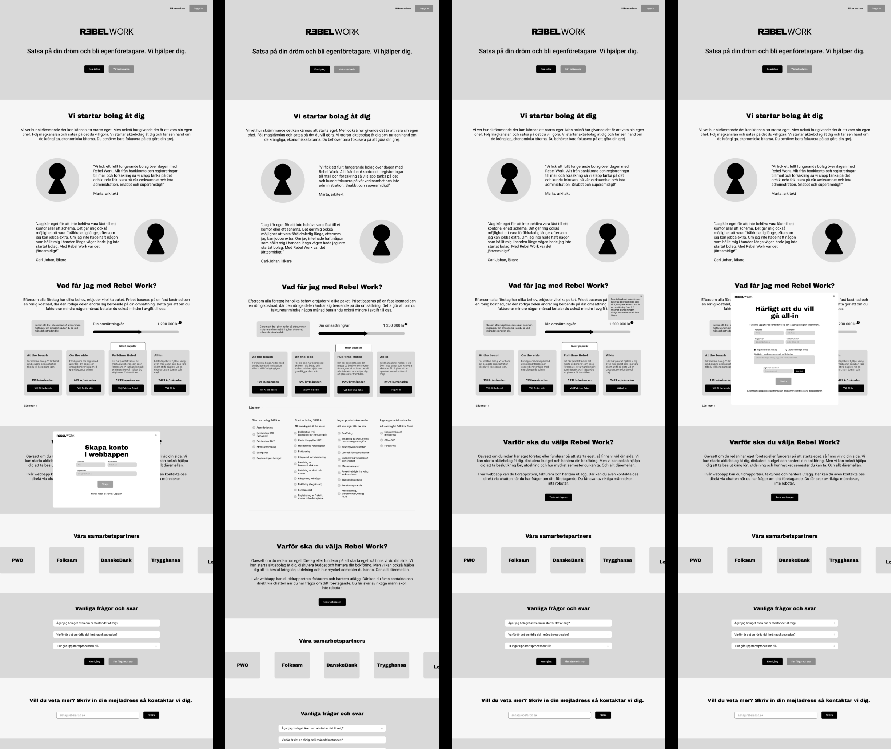
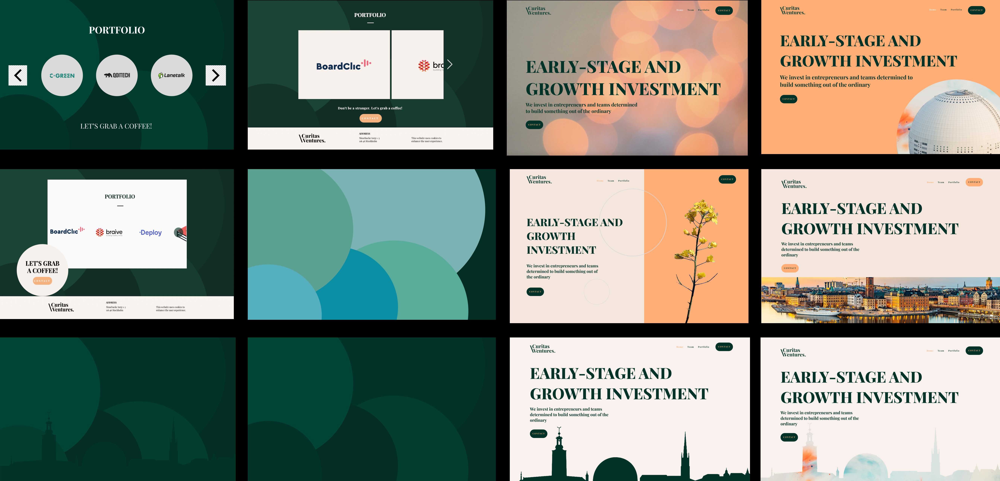

Works
Portfolio
Done Projects
UI Design
Toyota
The project entailed the UI Design for the website and registration process to the Toyota Logistics Design Competition 2024.
My contribution - UI Designer
Team - 3 members, Design process - Design Thinking Process
Emma adopted the design thinking process and started the project by gathering valuable user insights from previous competitors that had used the site the year before. It was important to understand where the UI could be improved but also what had worked well and understand the users needs, barriers and aspirations.
Emma created wireframes and clickable prototypes using Figma. The prototypes were tested on users and iteratively changed and a clear specification was delivered to the developers. Furthermore, she facilitated a workshop with the project group with the purpose of understanding what content to present in an interactive visualization in order to convey the new challenge of the competition.
The project is still ongoing and the next phase is to design the UI of the pages for the new challenge and this year's new jury.
Design problem
Organization was lacking a brand identity and coherent website which contributed to a design that was neither user friendly nor unique.
Design goal
Get a gathered view of the brand core and values. Go from using a black and white color palette with the goal to stand out, deepen the trust from users, have a clear purpose and of course be user friendly.
Design iteration

Result

REBEL WORK
Development of brand identity system, redesign of website and web application.
My contribution - UX/UI Designer, User Research, Graphical Designer
Team - 5 members, Design process - Double Diamond
During the first phase it was all about understanding the organization's brand core, persona and values in order to determine the direction towards of feeling and colors for the brand identity. One key to do so was to facilitate workshops and iteratively develop moodboards to determine.
The moodboards laid the ground for creating several landing pages that were tested during semi-structured interviews in order to test the feeling. Once again, workshops were key to define the navigation for the redesign of the website.
To continue, wireframes were created using Whimsical and Figma and then tested as clickable prototypes on users, iteratively, to develop a human-centerd design.
Some of the deliverables was a new design system, logo, an outline for brand identity, social media icons, internal templates and a clickable prototype of the website that was scalable for phone.


Design problem
Organization was lacking a brand identity and coherent website which contributed to a design that was neither user friendly nor unique.
Design goal
Get a gathered view of the brand core and values. Go from using a black and white color palette with the goal to stand out, deepen the trust from users, have a clear purpose and of course be user friendly.
Brand identity workshop
The goal of the workshop was to understand and specify brand core, brand value and brand persona together with the stakeholders.
The workshop focused on understanding what the brand represents and the most important USPs.
Website navigation workshop
During the navigation workshop, prioritizing the web site's different content and sections were in focus. The goal was to create a user friendly navigation and content sectioning, and decide the most important call to actions.
The results from the navigation workshop combined with the analyze from the user interviews, laid the ground for the design of the startpage.
Continuing phases were an iterative process of designing clickable prototypes of the wireframes, testing and redesign. Furthermore, finishing the design system and adapt the website for the phone.
Result
Startpage

Sign up and log in flow
Design system
Redesign
CURITAS VENTURES
Redesign of Curitas Ventures' website with design goals of a more familiar and happier view to make them stand out.
My contribution - UX Designer
In the role as UX Designer the process consisted of the qualitative method of interviews with the stakeholders to understand their vision and purpose with the redesign.
An analyze of the existing design and of competitors was conducted to understand the market, products and trends.
The redesign focused on the goals and were iteratively tested with users and stakeholders.
Design problem
Outdated design that doesn't represent the customer and their selling points.
Design goal
To attract companies with a happy and familiar tone that represents the company culture and simultaneously showcase professionality.
Wireframes and design iterations

Result
Redesign
PODCASTER
A UX Research project of the podcast application; Podcaster. The project at hand was to create an innovative redesign of the Podcaster application in order for it to be more social and interactive between users.
My contribution - User Research, UX & UI Design.
Team - 6 member, Design process - Double Diamond
An investigation of the users main motivation was conducted on the target group; age 20-35. It included interviews combined with user statistics from the application. Thereafter, user stories could be created with different needs, behaviors and challenges. The research also included an investigation of the market.
The define phase included brainstorming, iteratively creating sketches and wireframes, and analysing the application.
Clickable prototypes were made in Sketch.
Final design delivered through a clickable prototype, a video and a documentation on how to continue the work.
Main pain points
CAN'T SHARE
No easy process to share episodes and podcasts
CAN'T SAVE EPISODES
No method for saving single episodes, only entire podcasts
NO RECOMMENDATIONS
No possibilities of seeing recommended episodes from friends

Methods
Result

Contact
Contact me
My contact information
Let's talk
- +46 (0) 708 53 50 53
- emmajdigelstrom@gmail.com
- Visit my LinkedIn
- Stockholm